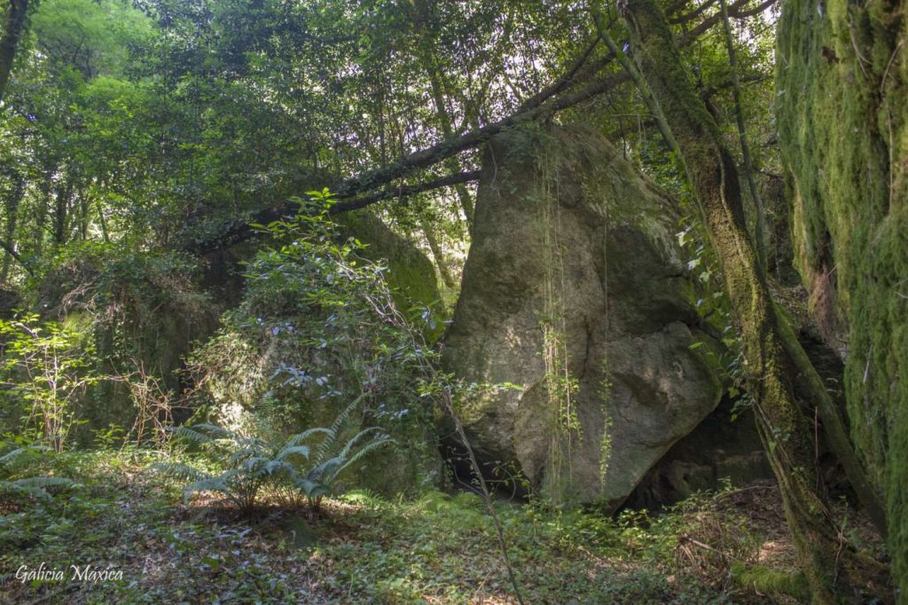
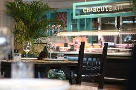
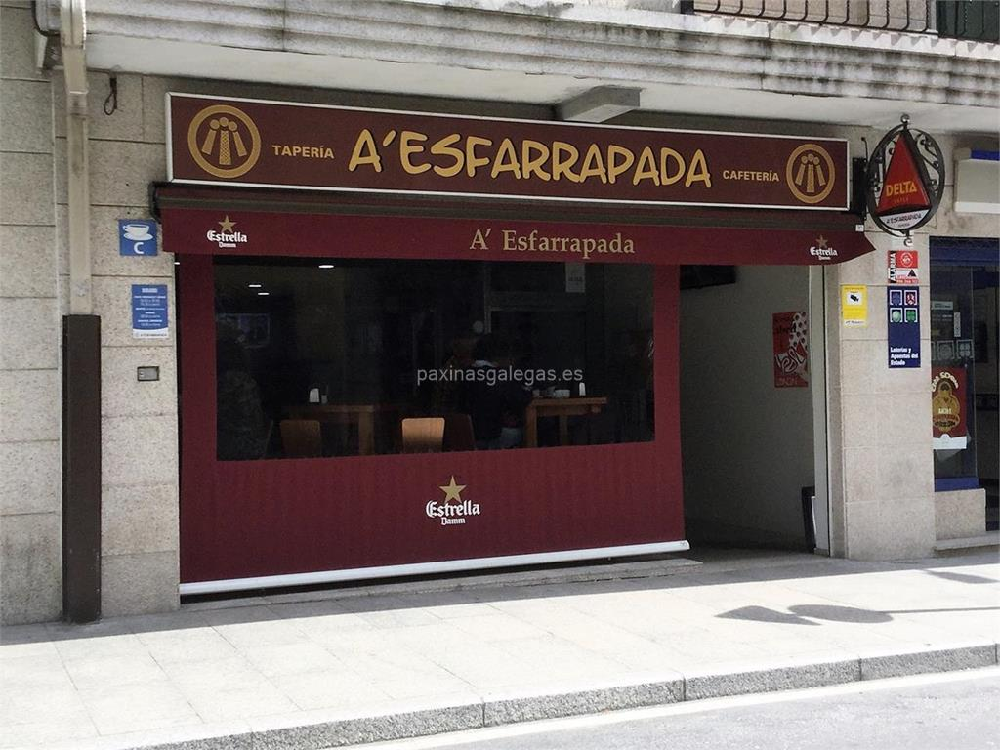

En la parroquia de Parderrubias, concello de Salceda de Caselas, se ha habilitado un mirador sobre el alto del llamado Coto das Pías, a 168,2 metros de altura sobre el nivel del mar.

Muy cerca del Espicho do Faro, antiguo emplazamiento medieval situado en Salceda de Caselas, nace un pequeño regato que desciende hacia el sur conocido como Regato da Fraga. Los alrededores de este alto están rodeados de canteras de granito y plantaciones de especies de rápido crecimiento. Esto no impide que en cierto lugar se forme un pequeño rincón lleno de magia que forma este regato da Fraga.
Tipos de cocina española y mediterránea, también tienen opciones veganas y sin gluten
Restaurante con carta según mercado y especialidades en calamares, chocos, zamburiñas, croquetas... y una amplia variedad de tapas. Se hacen comidas por encargo y para llevar y disponemos de servicio a domicilio en el casco urbano. Disponemos de terraza y wifi.
Vota por la candidatura Olímpica de Salceda de Caselas
¿Estás de acuerdo con la candidatura olímpica?